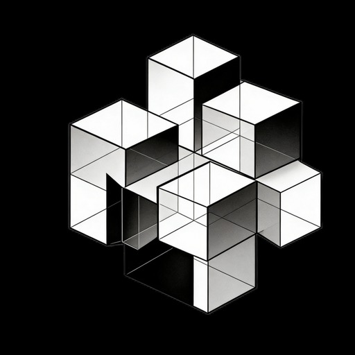

延长展览生命
展期结束后，观众仍可以通过网页进入展厅，回看作品、说明牌和导览路径，让一次线下展览留下可访问的数字版本。

元维构 METRIONMETRION VIRTUAL MUSEUM SERVICE
这是元维构的虚拟美术馆服务样板：我们把线下美术馆、画廊、艺术节或商业展示空间中的作品、说明牌、现场关系和三维转译模型整理成一个可在网页、移动端和 WebXR 中访问的虚拟展馆，让展览不只停留在现场，也能继续被远程观看、导览、传播和归档。
For Museums, Galleries & Exhibition Spaces
对美术馆和展示空间来说，展览往往受限于档期、地点和到场人数。元维构的虚拟展馆服务不是简单做一个图片网页，而是把展厅结构、作品位置、展签信息、导览逻辑、三维模型和后续档案入口组织成一个可浏览的空间。它可以作为实体展览的线上延展，也可以作为展前提案、巡展沟通、教育项目和馆藏数字化的一部分。
展期结束后，观众仍可以通过网页进入展厅，回看作品、说明牌和导览路径，让一次线下展览留下可访问的数字版本。
馆方可以把虚拟展厅用于线上讲解、学校课程、会员活动和媒体传播，让不在现场的人也能理解展览结构。
在布展前模拟作品关系、动线和说明牌位置，方便馆方、策展人、艺术家和赞助方快速看到空间效果。
每件作品都可以连接到单独档案页，记录原作信息、授权状态、转译模型、实拍照片和后续衍生开发可能。
What METRION Can Build
当前页面是一个样板空间。实际合作中，元维构根据馆方现有展厅、作品数量、展览主题和传播目标，重新搭建空间尺度、展墙节奏、作品说明、模型陈列、入口二维码和档案页面。
根据真实空间或策展草图搭建基础展厅，让线上空间保留展墙、动线、入口和观看距离。
整理作品图像、标题、作者、年代、媒介和导览文字，形成统一的线上说明牌系统。
对于适合拓展的作品，可加入三维转译模型、装置预览或 MR 展示入口，增强展览的空间表达。
交付可网页访问的虚拟展厅，可嵌入官网、二维码、展览宣传页，并预留 VR 设备适配接口。